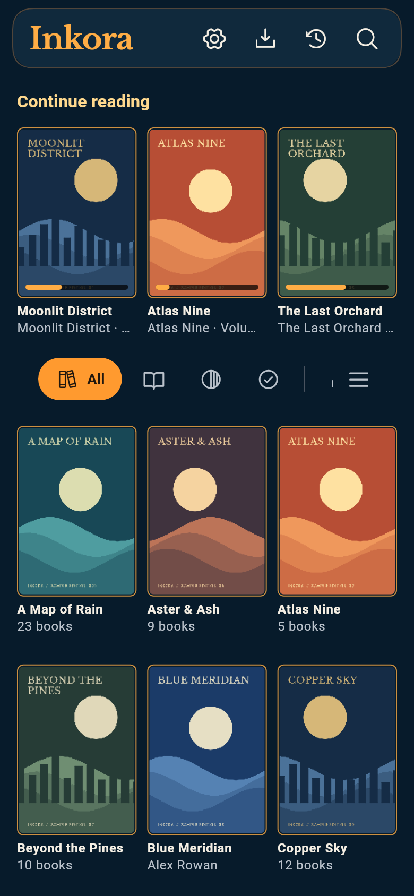
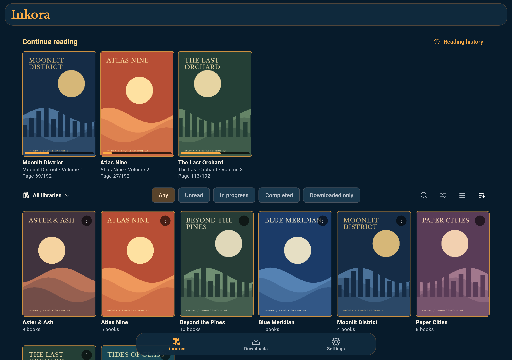
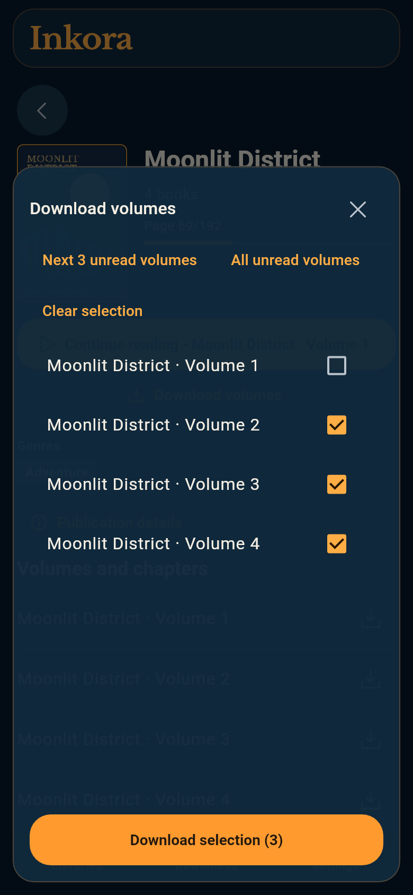
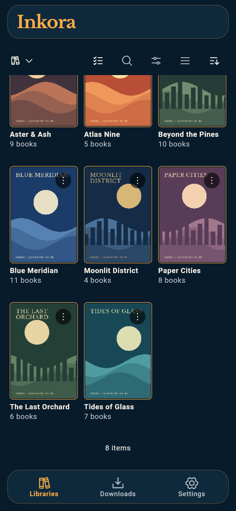
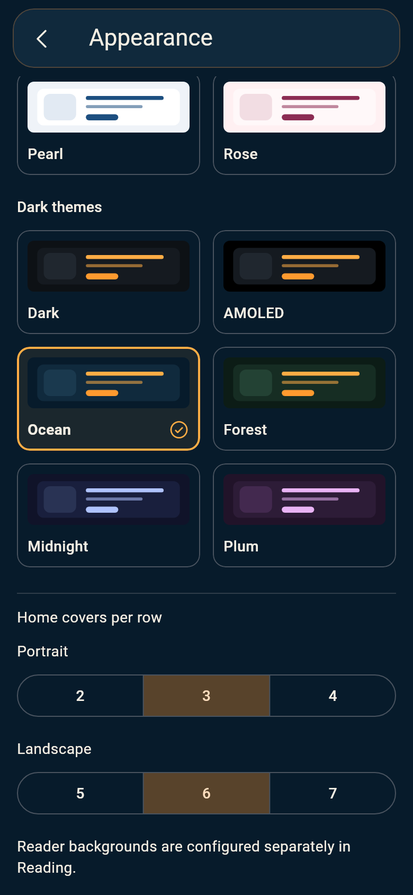
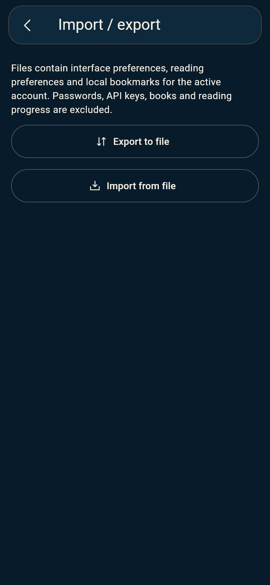

Find the right book
Browse series, collections and reading lists. Filter by reading status, format or downloaded books, or return to a recent read from your local history.
Manga, comics, webtoons and ebooks.
Bring your Komga collection
along, and settle into a good read.
Source available on GitHub. Made for phones and tablets.
In active
development; native iOS validation is still pending.

Keep your books on your own Komga server. Inkora makes browsing, reading and taking them with you feel natural.

Browse series, collections and reading lists. Filter by reading status, format or downloaded books, or return to a recent read from your local history.
Choose reading direction, page layout and gestures. Adjust image rendering, or settle into an ebook with your preferred typography and margins.
Jump through page thumbnails, save bookmarks with notes, and move to the next volume when you finish. Reading progress syncs to Komga when you reconnect.
Download the next three unread volumes, all unread volumes, or just the ones you choose. Follow transfers in the queue and manage storage and Wi-Fi preferences.
Open downloaded books without a connection. Your progress waits locally until your server is reachable again.

Appearance palettes, comfortable layouts and an interface in twelve languages. Take a closer look.



Actual app screens rendered with a fictional catalogue and original sample artwork. These captures show the current development version; published releases may differ.
Back up settings and bookmarks to a file, or import an existing settings QR code. Server credentials and downloaded books stay on your device; file import previews its contents before applying changes.
You need a reachable Komga server and an account. Inkora does not provide books or a hosted server.
Install the Android APK, enter your server address and sign in with an API key or your username and password.
Choose your visible libraries and reading preferences. Open a book, or download a few for later.